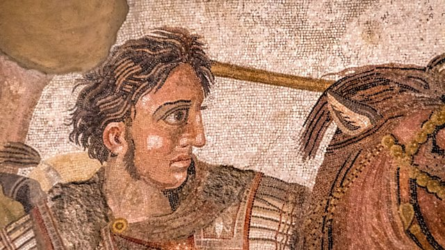

The nationality of Alexander the Great is one issue that has fed into the ongoing naming dispute between Greece and the Former Yugoslav Republic of Macedonia (FYROM) over the name ‘Macedonia’. We examine why the nationality of Alexander the Great remains a contentious issue today.
 Alexander the Great was born in July 365 BCE in Pella, the capital of Ancient Macedonia , which now sits within modern Greece. After succeeding his father to the throne, Alexander became one of the most successful military leaders in ancient history, conquering most of the Persian territories and parts of India. At the peak of his power, the Hellenistic Empire was the most powerful in the world, and Alexander the Great was legendary not only for his military prowess but alsofor spreading Hellenic culture across his Empire.
The ongoing debate about whether Alexander the Great was Greek or Macedonian stems from the fact that the geographical borders of the two countries have changed dramatically since Alexander the Great’s time. Ancient Macedonia was situated in the northern modern Greek peninsula, where the second-largest Greek city, Thessaloniki, is today. Modern Macedonia–or Former Yugoslav Republic of Macedonia (FYROM), as it is formally recognised–is different both geographically and in terms of its national population, which has more Slavic influence today than the country did in 300 BCE.
Nevertheless, both modern Greece and FYROM lay claim to Alexander the Great’s ancestry. In FYROM, a former Prime Minister named their airport after Alexander the Great and erected a huge statue in the capital, Skopje. However, after ongoing debate, Prime Minister Zoran Zaev ordered the name of the airport to be changed and the statue to be taken down.
The confusion about Alexander the Great’s lineage isn’t solved by looking to his ancestors either. Historian Mary Beard notes that members of Alexander the Great’s family took part in the Olympic Games , which some argue is proof of his Greek-ness. However there was, Beard notes, ‘originally some dispute at the time about whether they were, or were not, Greek enough to qualify.’ Even though he was a Macedonian king, Alexander I was finally allowed to participate in the Olympic Games based on his roots in the Greek Argive dynasty.
As the Olympic example shows, the national identity of Alexander the Great and his ancestors was complicated even during his time. Historians and residents of modern Greece and FYROM will likely continue to debate the question for as long as the name Macedonia is contended between the two countries.
Perhaps the best answer is that he was both: a man born in Ancient Macedonia, the son of a Macedonian King of Greek descent, educated by the esteemed Greek philosopher Aristotle, who went on to spread Ancient Greek culture and life throughout a world that has since changed dramatically.
The video underneath explains in great detail where Alexander the Great was born and who he was.